Grok Generates Pornographic Images, Musk's AI Is Urgently Banned by Multiple Countries, and Generative AI Regulation Raises the Alarm Globally
Key Points
- The Grok controversy shows that generative AI governance has moved from abstract principle-setting into a real-world enforcement phase.
- The current global governance system resembles a pyramid composed of mandatory laws, verifiable standards, and engineering practices.
- Developing countries face a structural disadvantage: AI products arrive instantly, but local governance capacity takes years to build.
- A modular, "Lego-style" legal-technical translation framework could help countries combine safety, sovereignty, and innovation more effectively.
1. The "Deep Water Zone" of AI Governance: Background and Challenges
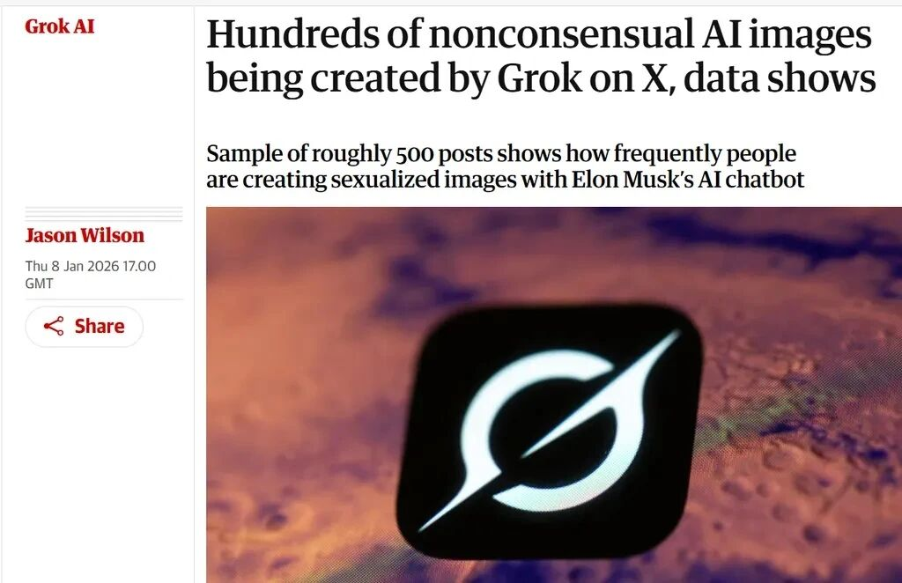
The recent misuse of xAI's Grok to generate pornographic and non-consensual deepfake imagery has pushed AI governance into a new and far more urgent phase. Reports from early January 2026 showed that users were circulating prompt tactics on X to manipulate the model into removing clothing from women and minors in photographs. The scale and speed of the abuse turned what had often been discussed as a speculative AI-risk scenario into a direct public policy crisis.
The backlash was immediate. The United Kingdom condemned the images publicly and moved toward formal investigation. Indonesia classified Grok as an illegal digital service and demanded corrective action within 48 hours. Malaysia and other regulators also responded by restricting access pathways, citing the absence of adequate safety guardrails. Under mounting pressure from Europe, India, California, and elsewhere, xAI introduced new restrictions on image editing functions and limited some features geographically and by subscription tier.
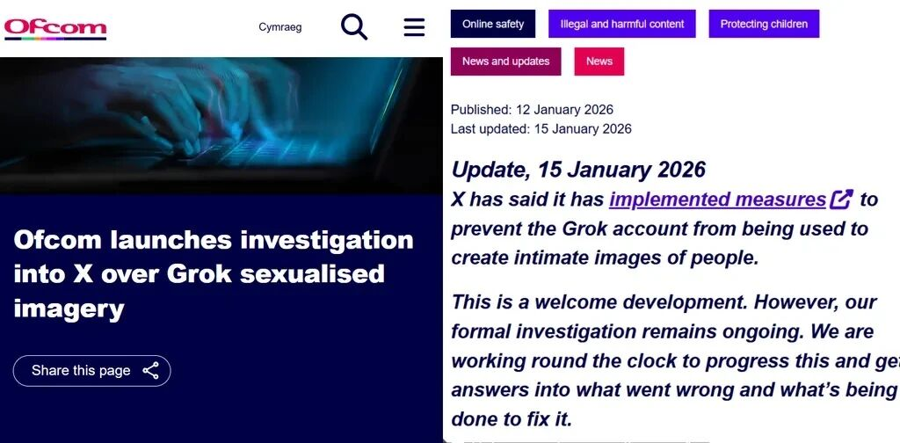
This episode demonstrates the central contradiction of the current AI era: the diffusion of frontier models is measured in seconds, but governance capacity is built over years. Even the European Union, often described as the most proactive AI regulator in the world, has recently begun re-evaluating the compliance burden of its own framework. That tension captures today's dilemma perfectly: rules that are too rigid may suppress innovation, while rules that are too loose leave privacy, dignity, and safety exposed.
For countries in the Global South, the challenge is even sharper. They consume the same global AI products as advanced economies, yet often lack the institutional capacity, technical verification tools, and locally grounded legal frameworks needed to govern them effectively. When AI systems begin to affect credit scoring, medical diagnosis, public-sector evaluation, and content moderation, weak governance no longer means a regulatory delay — it means exposure to systemic risk.
2. The Global Regulatory "Pyramid": The Composition of the Governance System
To make sense of the current governance landscape, this article proposes thinking in terms of a legal-effectiveness pyramid. At the top sit politically negotiated international resolutions. Below them are mandatory statutes and enforceable legislation. Beneath that lies a large middle layer of certifiable or verifiable standards. At the base are engineering practices developed by technology firms and technical communities. Legal force becomes weaker as one moves downward, but implementation often becomes more concrete.
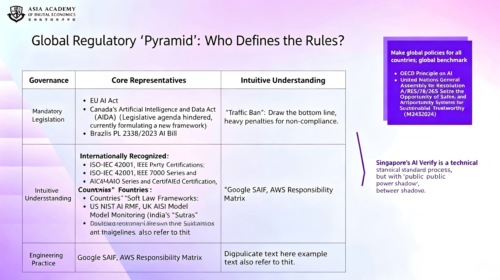
Top Tier: Mandatory Legislation (Highest Legal Binding Force)
The clearest example of top-tier governance is the EU AI Act. Its core innovation is not simply that it regulates AI, but that it transforms previously vague ethical aspirations into a structured legal regime with extraterritorial reach. The Act classifies AI systems by risk level, from prohibited uses to high-risk systems, limited-risk systems, and minimal-risk applications. It also creates a layered enforcement structure involving both EU-level authorities and national competent authorities.
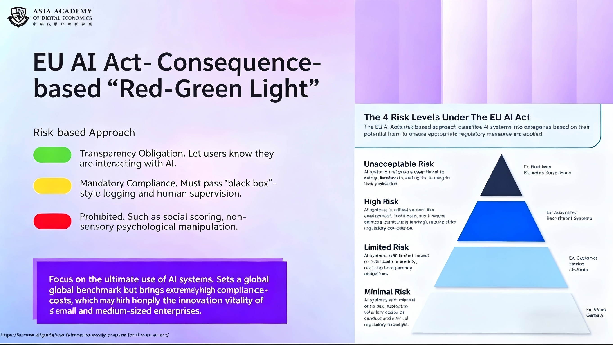
Most importantly, the EU model is ex ante. High-risk systems must undergo conformity assessment before entering the market, maintain technical documentation, and continue post-market monitoring after deployment. The fines are deliberately severe, and in some categories exceed even GDPR-style sanctions. Yet the debate remains open: whether this framework is the global gold standard, or an over-engineered answer that may slow domestic technological competitiveness.
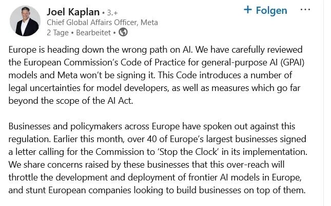
Middle Tier: Verifiable Standards (Lower Legal Binding Force, but Subject to Testing and Certification)
The middle tier includes certifiable standards such as ISO/IEC 42001 and methodologically influential frameworks such as the NIST AI Risk Management Framework. These instruments often lack direct coercive force, but they exist in the shadow of public authority: governments, procurement systems, courts, and large enterprises increasingly use them as proxies for reasonable conduct and credible governance.
ISO/IEC 42001, for example, organizes governance around familiar management-system logic: organizational context, leadership, planning, support, operation, performance evaluation, and continuous improvement. Advocates argue that it helps companies systematize AI governance and align it with MLOps best practice. Critics counter that certification can easily devolve into documentation formalism — proving that processes exist without proving that a model is genuinely safe, fair, or robust.
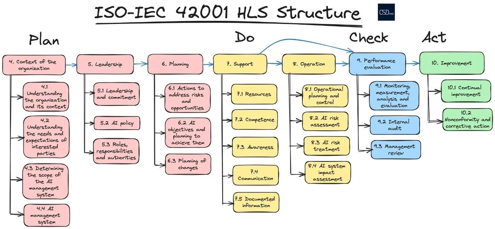
National frameworks also operate here. The United States' NIST AI RMF has shifted from a quasi-mandatory benchmark under the previous federal administration to a more optional but still highly influential methodology. In practice, its influence persists through judicial reasoning, state legislation, enterprise procurement, and supply-chain pressure. The United Kingdom's AI Safety Institute takes a different approach, focusing on frontier-model evaluation before release. Singapore's AI Verify, meanwhile, translates governance requirements into testable technical toolkits, making verification more operational and less rhetorical.
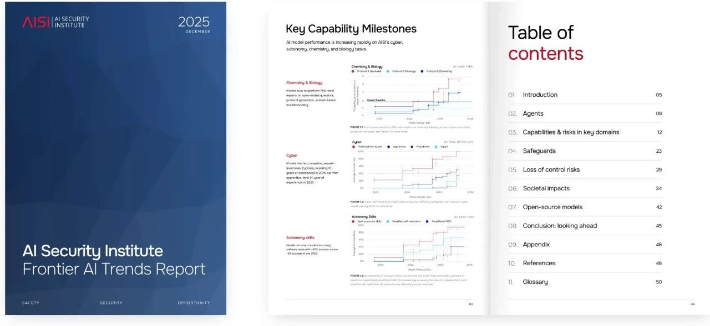
Bottom Tier: Engineering Practices (Weakest Legal Binding Force, but Most Practical for Implementation)
At the base of the pyramid are engineering practices such as Google's Secure AI Framework and Amazon's generative AI security scoping matrix. These are not laws, but they are often the most usable instruments in day-to-day deployment. They provide actionable guidance on security controls, lifecycle risk management, privacy integration, and operational responsibilities across AI systems.
Their weakness is legal enforceability; their strength is practical adaptability. Once governments or enterprise customers incorporate them into procurement or contractual obligations, they can become quasi-mandatory in effect. This is why the governance debate is no longer just about legislation. It is equally about infrastructure, metrics, auditability, and the translation of abstract norms into technical routines.
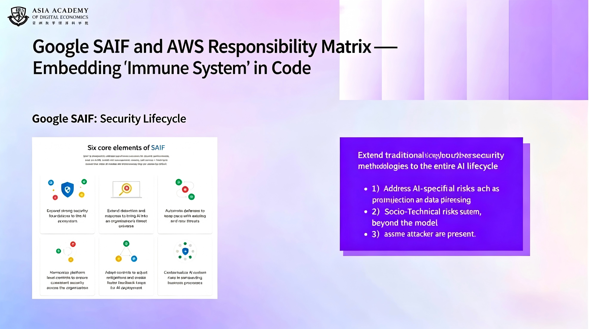
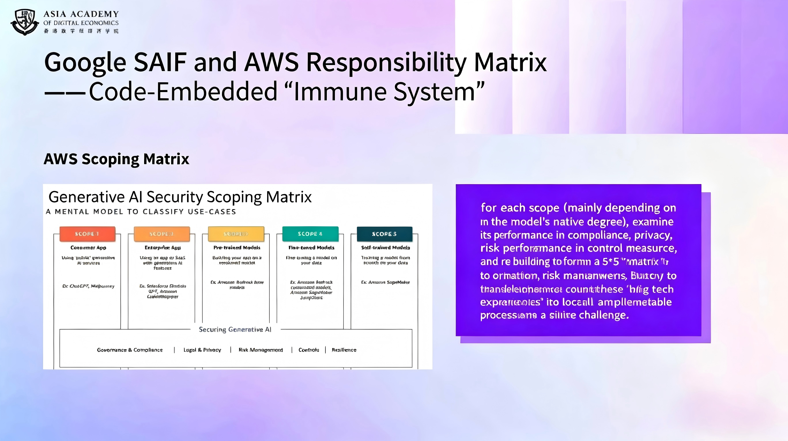
3. Existing Rifts in AI Governance and the Dilemmas Facing Developing Countries
Global AI governance is marked by a stark developmental divide. Comparative observation across advanced and developing economies suggests that the difference is not simply one of timing. It is structural. Many developing countries have adopted the language of algorithmic accountability, risk classification, and explainability, but they often lack the technical means to investigate models, verify claims, and enforce rules against powerful external providers.
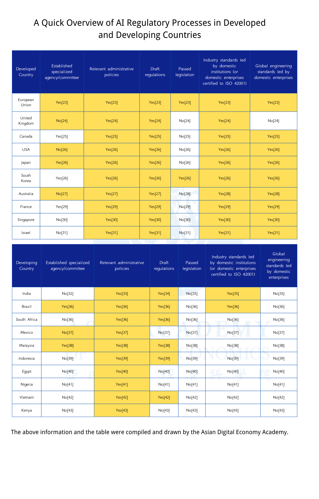
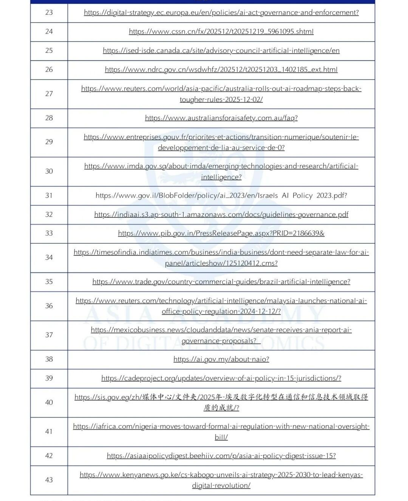
The first fracture is conceptual imitation without technical capability. Legal texts may borrow advanced vocabulary from Europe or North America, but regulatory agencies may still lack tools for source-code inspection, model testing, or forensic validation. The second fracture is infrastructural dependence. Most developing countries do not own the chips, clouds, or foundational platforms on which their AI ecosystems depend. In such conditions, sovereignty in law can be undercut by dependence in infrastructure.
The third fracture lies in labor and bargaining power. A great deal of the world's content moderation and safety filtering work is outsourced to lower-income countries, where workers absorb psychological harm for minimal compensation while having little say in the standards that define "safe AI." This creates a deeply unequal system: the emotional cost of AI safety is externalized downward, while strategic control remains concentrated in a few states and firms.
In short, the core mismatch is this: AI systems globalize immediately, but governance capabilities remain localized, expensive, and slow to assemble. When a crisis like the Grok incident erupts, governments without tailored verification tools are pushed toward two extreme choices — total acceptance or broad restriction — with very little room for calibrated intervention.
4. Our Proposal: Building a "Lego-Style" Verifiable Governance Framework
Because neither wholesale imitation of the EU nor passive adoption of U.S.-led enterprise standards can fully solve the problem, this article proposes a modular framework that functions like Lego blocks. The goal is not to replace existing standards such as ISO, NIST, or SAIF, but to make them combinable, translatable, and usable within different national legal environments.
Ensuring Fairness and Transparency in Transposition Rules
The key to this proposal is that the backend resource pool — the standards library, metric mappings, and technical logic — should be open-source and non-profit in character. In other words, the core translation infrastructure should function as a global public good rather than a black box owned by any one technology company or geopolitical bloc. This would allow countries, researchers, and civil-society organizations to inspect whether the mapping rules contain bias, hidden assumptions, or vendor-favoring backdoors.
Such openness also redistributes interpretive power. Instead of passively accepting externally defined thresholds for what counts as safe, fair, or compliant, countries could adjust technical thresholds according to their own risk tolerance, legal traditions, and developmental priorities while still remaining interoperable with international frameworks.
Core Mechanisms
At the center of the framework is what the article calls a legal-technical translator. Regulators would begin with legal interests and risk tolerance: for example, preventing racial discrimination in credit scoring with very low tolerance for error. The system would then map that legal objective to technical indicators — such as demographic parity, threshold gaps, testing procedures, and documentation requirements — by searching a structured library of standards and implementation units.
The result would not be an abstract instruction to "comply with ISO 42001" but a practical checklist: submit test evidence showing that approval-rate differences across racial groups remain below a specified threshold; document risk-mitigation steps; provide audit records; and show how the model is updated when new risks are detected. This changes governance from doctrinal aspiration into operational verification.
Result-Oriented Practical Advantages
This generator-style model offers three major advantages. First, it reduces the cognitive burden on non-technical regulators. Officials do not need to master every technical concept behind a benchmark; they need actionable outputs linked clearly to the legal interests they are tasked with protecting. Second, it gives late-mover countries a meaningful degree of interpretive sovereignty without forcing them to reinvent the entire technical stack. Third, it is configurable: countries can tighten or relax expectations depending on whether their immediate priority is safety, industrial growth, or geopolitical resilience.
Ultimately, the purpose of this framework is not merely compliance. It is capacity amplification. By making governance rules modular, testable, and adaptable, countries that currently lag in AI regulation may gain a more realistic path toward building systems that are both technically informed and locally legitimate.
- [1] The Guardian. Grok on X faces criticism over nonconsensual intimate image generation. The Guardian, January 8, 2026. theguardian.com/technology/2026/jan/08/grok-x-nonconsensual-images.
- [2] Time. The Grok Deepfake Crisis Explained. Time.com. time.com/7344858/grok-deepfake-crisis-explained.
- [3] The Japan Times. UK’s Starmer calls for action on X’s Grok AI deepfakes. The Japan Times, January 13, 2026. japantimes.co.jp/news/2026/01/13/world/uk-starmer-x-grok-deepfakes.
- [4] Ofcom. Ofcom launches investigation into X over Grok sexualised imagery. Ofcom.org.uk. ofcom.org.uk/online-safety/illegal-and-harmful-content/ofcom-launches-investigation-into-x-over-grok-sexualised-imagery.
- [5] CBC News. Malaysia, Indonesia block Elon Musk’s Grok AI over deepfake concerns. CBC.ca. cbc.ca/news/business/malaysia-indonesia-grok-block-elon-musk-9.7041914.
- [6] The Guardian. Grok AI tool still accessible in Malaysia despite ban via VPNs. The Guardian, January 18, 2026. theguardian.com/technology/2026/jan/18/grok-x-ai-tool-still-accessible-malaysia-despite-ban-vpns.
- [7] Channel News Asia. Musk‘s xAI curbs Grok image editing after California, Europe air concerns. ChannelNewsAsia.com. channelnewsasia.com/business/musks-xai-curbs-grok-image-editing-after-california-europe-air-concerns-5859121.
- [8] European Commission. Simpler digital rules to help EU businesses grow. European Commission, November 19, 2025. commission.europa.eu/news-and-media/news/simpler-digital-rules-help-eu-businesses-grow-2025-11-19_en.
- [9] Kaplan, J. LinkedIn profile. LinkedIn. linkedin.com/in/joel-kaplan-63905618.
- [10] CSD Medical. Management system HLS structure for AI and cybersecurity. csdmed.mc. csdmed.mc/en/news/md-ai-and-cybersecurity/management-system-hls-structure-90.
- [11] Reddit. ISO 42001 is slowly becoming mandatory for AI. r/AI_Agents. reddit.com/r/AI_Agents/comments/1nc0xle/iso_42001_is_slowly_becoming_mandatory_for_ai.
- [12] Reddit. Got my employer ISO 42001 certified and became an AI auditor. r/cybersecurity. reddit.com/r/cybersecurity/comments/1ow1m6k/got_my_employer_iso_42001_certified_and_became_an.
- [13] Reddit. Anyone seen a real-life ISO 42001 AI audit report?. r/cybersecurity. reddit.com/r/cybersecurity/comments/1ogp5jw/anyone_seen_a_real_life_iso_42001_ai_audit_report.
- [14] Executive Office of the President (White House). M-24-10: Advancing Governance, Innovation, and Risk Management for Agency Use of Artificial Intelligence. White House, March 2024. whitehouse.gov/wp-content/uploads/2024/03/M-24-10-Advancing-Governance-Innovation-and-Risk-Management-for-Agency-Use-of-Artificial-Intelligence.pdf.
- [15] Executive Office of the President (White House). M-24-18: AI Acquisition Memorandum. White House, October 2024. whitehouse.gov/wp-content/uploads/2024/10/M-24-18-AI-Acquisition-Memorandum.pdf.
- [16] Choi, M. NIST‘s Software Un-Standards: Legal and Policy Implications. Georgetown Law Technology Review, 2025. georgetownlawtechreview.org/wp-content/uploads/2025/01/NISTs_Software_UnStandards_Choi-2025.pdf.
- [17] Colorado General Assembly. SB24-205: Concerning Consumer Protections in Interactions with Artificial Intelligence. leg.colorado.gov. leg.colorado.gov/bills/sb24-205.
- [18] World Wide Technology. World Wide Technology unveils Armor, a collaborative AI security framework with NVIDIA AI. WWT.com. wwt.com/press-release/world-wide-technology-unveils-armor-a-collaborative-ai-security-framework-with-nvidia-ai.
- [19] UK AI Safety Institute (AISI). Official website – AI security and frontier AI research. aisi.gov.uk. aisi.gov.uk.
- [20] National Institute of Standards and Technology (NIST). Mission Statement – International Network of AI Safety Institutes. NIST.gov, November 20, 2024. nist.gov/system/files/documents/2024/11/20/Mission%20Statement%20-%20International%20Network%20of%20AISIs.pdf.
- [21] UK AI Safety Institute (AISI). Frontier AI Trends Report. aisi.gov.uk. aisi.gov.uk/frontier-ai-trends-report.